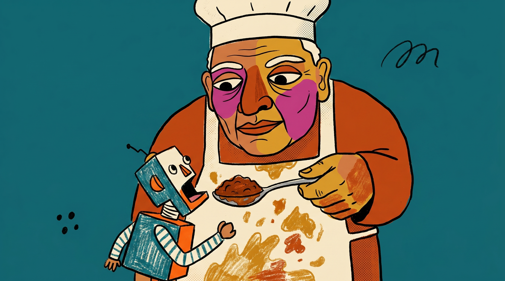
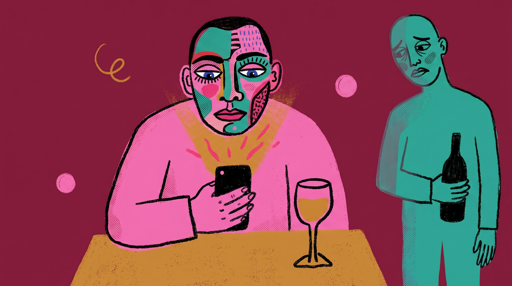
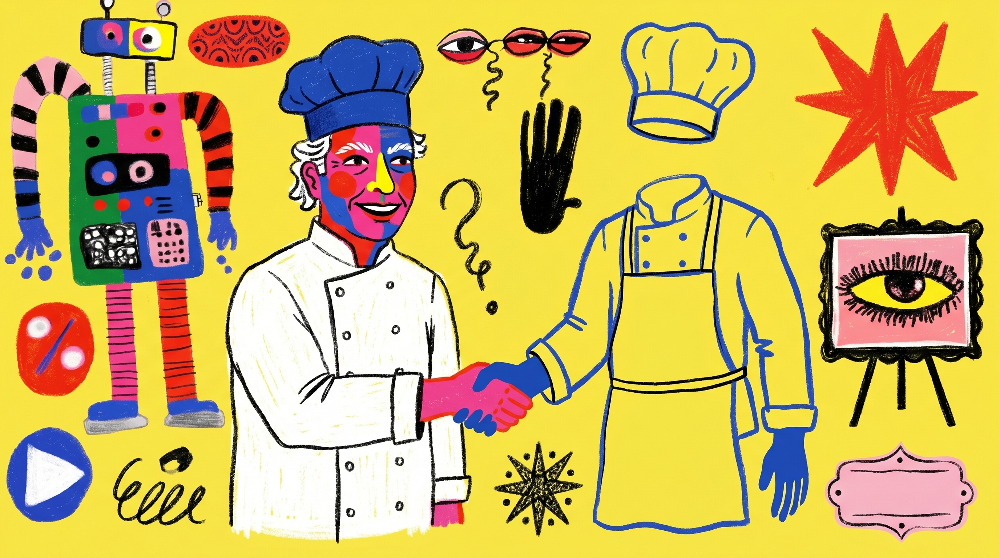

插圖風格實驗
抽風格 · 同概念重畫
抽取一組參考影格（Bandy Garnet「Jazz Boom Bap」）的影像風格，把我們既有的插圖概念用這套風格重畫一次。概念與視角不變，只換畫法。
怎麼看：概念一、二是首期已有的長文配圖——左邊是現有 Risograph 版、右邊是新的 bold 風，同一個點子、兩種畫法直接對照。概念三沒有舊版，是測這套風格當 Amuse（諷刺自嘲）專屬視覺的感覺。
概念一 · 〈四十年的咖哩味，他們正在教機器怎麼嚐〉
一個用了一輩子舌頭的廚師，把味覺交給一台機器。
現有 · Risograph

新 · Bold 風

概念二 · 〈最懂酒的人就站在桌邊，他們卻問了 ChatGPT〉
客人低頭問手機，身邊真正懂酒的人被晾在一旁。
現有 · Risograph

新 · Bold 風

概念三 · Amuse 方向（諷刺 · 無舊版對照）
一位真主廚，隆重介紹一位不存在的主廚——測這套大膽風當 Amuse 專屬視覺。
新 · Bold 風

這是風格實驗：參考影格僅作為「風格錨點」，產出的是我們自己的概念，不照搬對方的角色或構圖。若決定採用，會再調成 The Pass 自己的混搭、拉開與原作者的距離（避免變成「在地版 Bandy Garnet」）。
The Pass 出菜口
插圖風格實驗 · 內部評估用